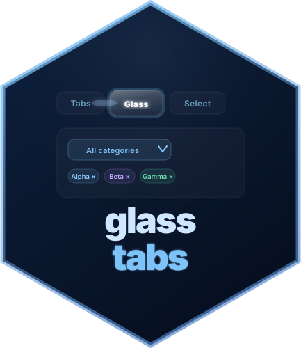

Glass-styled standard Shiny choice inputs
Source:R/glass_choice_inputs.R
glassSwitch.RdThese controls retain the native Shiny input bindings and update functions.
Call useGlassTabs() once in the page UI. The default theme follows the
nearest Bootstrap color mode; a custom dark selector is optional.
Usage
glassSwitch(
inputId,
label,
value = FALSE,
theme = c("auto", "light", "dark"),
size = c("md", "sm", "lg"),
glass_strength = 1,
width = NULL,
dark_selector = NULL
)
glassRadioGroup(
inputId,
label,
choices,
selected = NULL,
inline = FALSE,
theme = c("auto", "light", "dark"),
size = c("md", "sm", "lg"),
glass_strength = 1,
width = NULL,
dark_selector = NULL
)
glassCheckboxGroup(
inputId,
label,
choices,
selected = NULL,
inline = FALSE,
theme = c("auto", "light", "dark"),
size = c("md", "sm", "lg"),
glass_strength = 1,
width = NULL,
dark_selector = NULL
)Arguments
- inputId
Shiny input identifier.
- label
Input label.
- value
Initial logical switch value.
- theme
One of
"auto","light", or"dark".- size
One of
"md","sm", or"lg".- glass_strength
Decorative glass intensity, from 0 to 1.
- width
Optional Shiny CSS width.
- dark_selector
Optional ancestor selector indicating dark mode.
- choices
Choices accepted by the corresponding Shiny input.
- selected
Initially selected value(s).
- inline
Logical. Arrange group choices inline.
Value
A Shiny UI tag. The server receives a logical switch, a single character radio value, or a character vector of checked choices.
Details
Use shiny::updateCheckboxInput(), shiny::updateRadioButtons(),
and shiny::updateCheckboxGroupInput() respectively for server updates.
Examples
glassSwitch("enabled", "Enabled", TRUE)
#> <div class="gt-choice-family gt-choice-switch gt-choice-md theme-auto theme-light" style="--gt-choice-strength:1;max-width:100%;">
#> <div class="form-group shiny-input-container" style="width:100%;">
#> <div class="checkbox">
#> <label>
#> <input id="enabled" type="checkbox" class="shiny-input-checkbox" checked="checked"/>
#> <span>Enabled</span>
#> </label>
#> </div>
#> </div>
#> </div>
glassRadioGroup("mode", "Mode", c("Edit", "Preview"), inline = TRUE)
#> <div class="gt-choice-family gt-choice-radio gt-choice-md theme-auto theme-light" style="--gt-choice-strength:1;max-width:100%;">
#> <div id="mode" style="width:100%;" class="form-group shiny-input-radiogroup shiny-input-container shiny-input-container-inline" role="radiogroup" aria-labelledby="mode-label">
#> <label class="control-label" id="mode-label" for="mode">Mode</label>
#> <div class="shiny-options-group">
#> <label class="radio-inline">
#> <input type="radio" name="mode" value="Edit" checked="checked"/>
#> <span>Edit</span>
#> </label>
#> <label class="radio-inline">
#> <input type="radio" name="mode" value="Preview"/>
#> <span>Preview</span>
#> </label>
#> </div>
#> </div>
#> </div>
glassCheckboxGroup("fields", "Fields", c("Name", "County"))
#> <div class="gt-choice-family gt-choice-checkbox gt-choice-md theme-auto theme-light" style="--gt-choice-strength:1;max-width:100%;">
#> <div id="fields" style="width:100%;" class="form-group shiny-input-checkboxgroup shiny-input-container" role="group" aria-labelledby="fields-label">
#> <label class="control-label" id="fields-label" for="fields">Fields</label>
#> <div class="shiny-options-group">
#> <div class="checkbox">
#> <label>
#> <input type="checkbox" name="fields" value="Name"/>
#> <span>Name</span>
#> </label>
#> </div>
#> <div class="checkbox">
#> <label>
#> <input type="checkbox" name="fields" value="County"/>
#> <span>County</span>
#> </label>
#> </div>
#> </div>
#> </div>
#> </div>